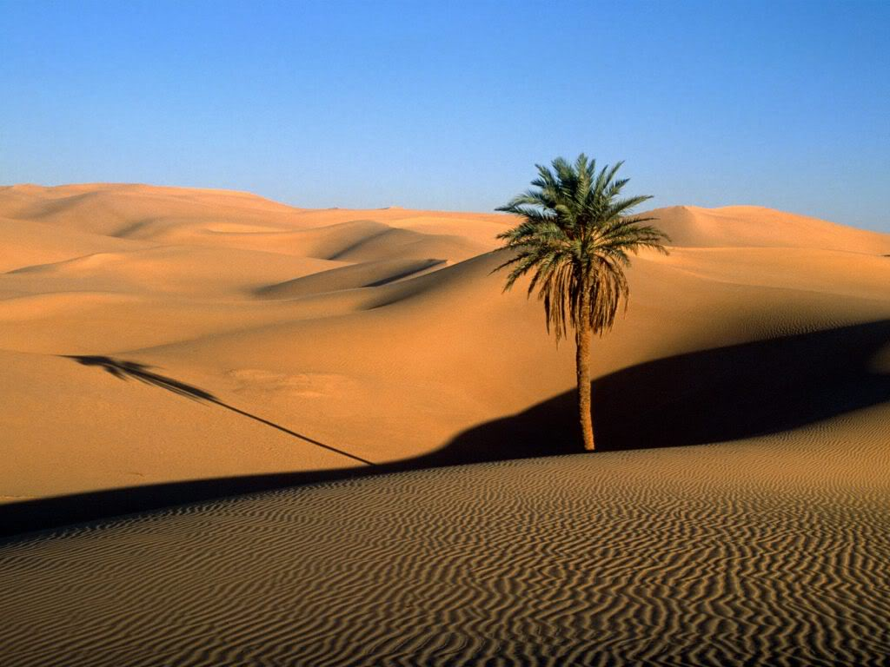
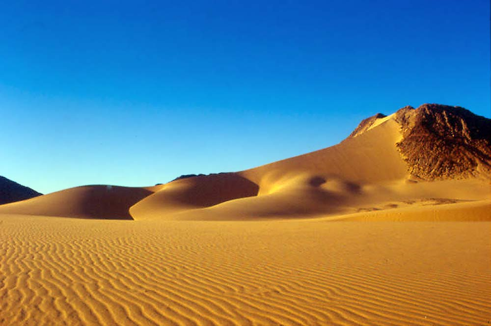
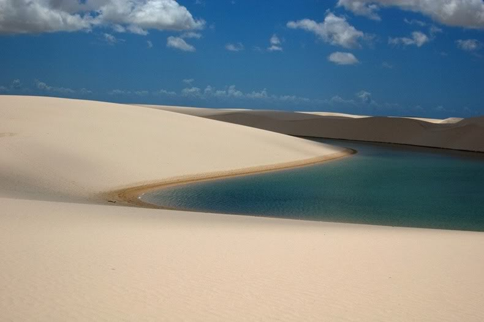
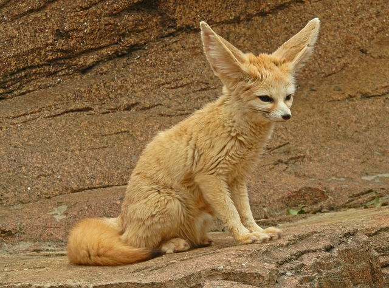

ΠΕΡΙΒΑΛΛΟΝ ΕΡΗΜΟΥ
.jpg)
Ένα χαρακτηριστικό των περισσότερων ερημικών περιοχών είναι οι ακραίες διακυμάνσεις της θερμοκρασίας μεταξύ νύχτας και ημέρας, που σε ορισμένες περιπτώσεις είναι της τάξεως των 20 βαθμών κελσίου. Ορισμένες έρημες περιοχές είναι θερμότερες από άλλες. Για παράδειγμα, στις ερήμους του Μεξικού και της Λιβύης σημειώνονται μεγαλύτερες θερμοκρασίες από ότι στην έρημο Γκόμπι (μεταξύ Βόρειας Κίνας και της Νότιας Μογγολίας), όπου ορισμένες φορές, καταγράφονται θερμοκρασίες εώς 58 βαθμούς. Τέτοιες θερμοκρασίες προφανώς απειλούν τον άνθρωπο με θερμοπληξία, ηλιακά εγκάυματα και αφυδάτωση. Από την άλλη μεριά, οι θερμοκρασίες κατά την νύχτα είναι πάρα πολύ χαμηλές. Στις ερήμους του βόρειου Γκόμπι και της Σιβυρίας οι θερμοκρασίες την νύχτα μπορεί να πέσουν μέχρι και τους -10 βαθμούς. Το ψύχος αυτό, μπορεί να συνοδεύεται και από ισχυρούς ανέμους οι οποίοι να δυσχαιρένουν ακόμη περισσότερο το κλίμα. Η θερμοκρασία του ήλιου κατά την ημέρα, απορροφάται από την άμμο, τα χαλίκια και τους βράχους, αλλά κατά την νύχτα επανακτινοβολείται στον ουρανό και χωρίς σύννεφα να την συγκρατούν, διαφεύγει προς τα ανώτερα στρώματα της ατμόσφαιρας, κάνοντας έτσι την έρημο να παγώνει απότομα.
 Οι έρημοι διαφέρουν ως προς την μορφή και την φύση των χαρακτηριστικών γνωρισμάτων που υπάρχουν στην επιφάνεια των εδάφων των - από υψηλά οροπέδια μέχρι αμμόλοφοι. Οι βροχοπτώσεις ποικίλουν από μια έρημο σε άλλη όπως και από εποχή σε εποχή. Σε μια έρημο οι βροχοπτώσεις στην διάρκεια του έτους μπορεί να φθάσουν σε ύψος 20 εκ. ενώ σε άλλη μπορεί να μην βρέξει καθόλου. Γενικά, μια ορεινή έρημος δέχεται περισσότερες βροχές από ότι οι αμμόλοφοι.
Αντίθετα όμως με αυτό που όλοι υποθέτουμε, στις ερήμους διατηρείται ζωή. Ορισμένα είδη ζωϊκής και φυτικής ζωής, έχουν μέσα από χιλιάδες χρόνια εξέλιξης, προσαρμοστεί σε αυτό το άνυδρο περιβάλλον. Επίσης, διάφοροι ιθαγενείς λαοί έχουν καταφέρει να κάνουν την έρημο τόπο διαμονής τους.
Στις ερήμους συναντάμε ελάχιστα είδη φυτών, όπως η χουρμαδιά (φοίνικας), που είναι πολύ σημαντικό δέντρο για τη ζωή των κατοίκων της ερήμου. Για να εξασφαλίσει την απαραίτητη υγρασία, η χουρμαδιά, αναπτύσσει βαθιές ρίζες που φτάνουν ακόμα και 30 μέτρα βάθος. Οι κάτοικοι της περιοχής χρησιμοποιούν τους καρπούς, τα φύλλα αλλά και τον κορμό από τα γέρικα δέντρα ( τροφή, χτίσιμο σπιτιών κλπ). Στις ερήμους μπορούμε να συναντήσουμε μικρές εκτάσεις με νερό και βλάστηση, τις γνωστές οάσεις, οι οποίες δημιουργούνται από υπόγεια νερά και αποτελούν πραγματικά "νησιά" βλάστησης μέσα στις ερήμους.
Στις ερήμους η πρωτογενής παραγωγή στηρίζεται σε κάποια αλόφυτα, παχύφυτα (κάκτοι) και σε μερικά ετήσια μικρά φυτά που αναπαράγονται στη σύντομη περίοδο του έτους που το διαθέσιμο νερό επαρκεί Ανάμεσα στις προσαρμογές των φυτών της ερήμου στην ξηρασία είναι η φυλλόπτωση, ο σχηματισμός μικρών και παχύδερμων φύλλων και το εκτεταμένο ριζικό σύστημα στο οποίο αποθηκεύονται σημαντικές ποσότητες νερού σε περιόδους που αυτό είναι διαθέσιμο.
Στις ερήμους τα ζωικά είδη αντιπροσωπεύονται από λίγα μεγάλα σπονδυλόζωα όπως η αντιλόπη, άφθονα τρωκτικά που ζουν σε τρύπες μέσα στο έδαφος, πτηνά όπως η στρουθοκάμηλος και διάφορα είδη εντόμων.Τα ζώα της ερήμου, επιβιώνοντας σε συνθήκες υψηλών θερμοκρασιών και ξηρασίας, έχουν αναπτύξει πολυάριθμες προσαρμογές (μείωση της εφίδρωσης, περιορισμένη κατανάλωση του ελεύθερου νερού, κατανάλωση τροφών μεγάλης περιεκτικότητας σε νερό, αποφυγή της έκθεσης τους στον ήλιο - ανάπτυξη νυκτόβιας δραστηριότητας κ.λπ.).
Οποιοσδήποτε που επιχειρεί να ταξιδέψει στην έρημο, είτε πετώντας με αεροπλάνο (εκτός από τις πτήσεις των εμπορικών αεροπλάνων) είτε διασχίζοντας την με όχημα, πρέπει να έχει κατάλληλη προετοιμασία. Στην έρημο, η ύπαρξη νερού και η ικανότητα συλλογής του αποτελεί ύψιστη προτεραιότητα. Για το λόγο αυτό, στη συλλογή των ειδών επιβίωσης, πρέπει να περιλάβετε και είδη που θα αντιμετωπίζουν την ανάγκη αυτή. Οποιαδήποτε κατάσταση επιβίωσης, στην έρημο, είναι σχεδόν βέβαιο ότι θα συνεπάγεται κάποια μορφή μετακίνησης, όπου θα πρέπει να μεταφέρετε τον όγκο οποιυδήποτε αποθέματος νερού - και το νερό είναι βαρύ. Επίσης, χρειάζονται ανάλογα ρούχα που θα παρέχουν προστασία στο σώμα από την ηλιακή θερμότητα, κατά την ημέρα, και από το ακραίο ψύχος, κατά την νύχτα.